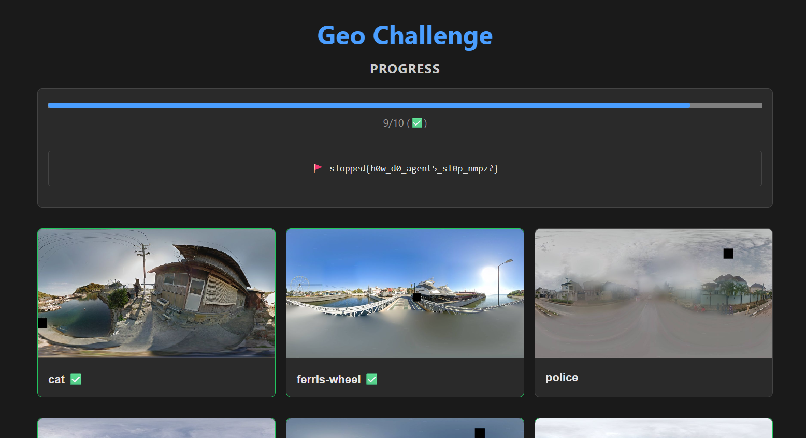

operator brief
Overview
Solved nine worldwide geolocation cards and used the 9/10 progress state as proof to recover the displayed flag.
Geo Challenge from Slopped CTF.
OSINT · Medium difficulty.
portfolio value
Skills Demonstrated
solve path
Timeline
Read the challenge description and identified the intended attack surface.
Collected the important clues from source, UI behavior, or evidence screenshots.
Built the working exploit path or confirmed enough locations to unlock the proof.
Recovered the flag and documented the chain cleanly.
solution notes
Walkthrough
Challenge Idea
The Geo Challenge presented multiple panorama/location cards from around the world. Each card had to be identified and submitted correctly until enough progress was reached.
The solve reached 9/10 confirmed locations, which unlocked the flag shown in the progress panel.
OSINT Workflow
- Start with visible landmarks: coastline shape, ferris wheel, police/street context, buildings, terrain, and road layout.
- Use environmental clues such as architecture, weather, signage style, driving side, vegetation, and waterfront features.
- Compare candidate locations against satellite view, street view, and public images until the panorama matches.
- Submit the confirmed place names/locations one by one and track progress.
Progress Proof
The screenshot below shows the challenge after nine different locations were confirmed. At that point, the challenge displayed the flag in the progress box.
Progress: 9/10
Flag: slopped{how_d0_agent5_sl0p_nmpz?}The original notes did not include the exact final list of the nine locations, so this page documents the validated solve proof and the OSINT methodology without inventing unsupported place names.
proof locker
Evidence

The UI shows 9/10 solved locations.
The flag is displayed directly in the progress panel after the threshold is reached.
final artifact
Flag
slopped{how_d0_agent5_sl0p_nmpz?}
after action report
Lessons Learned
- Geolocation challenges are easier when every visual clue is tested against independent map evidence.
- Progress screenshots are useful proof when the exact location list is not saved in the notes.
- Avoid guessing unsupported locations in a public writeup; document only the confirmed evidence.
- Track solved cards during the CTF so future writeups can include a clean table of locations.